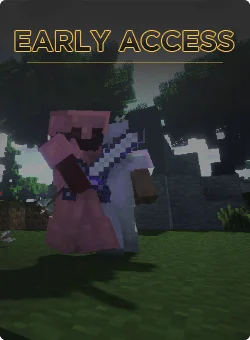
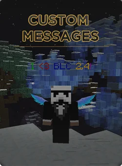
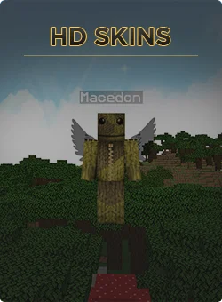
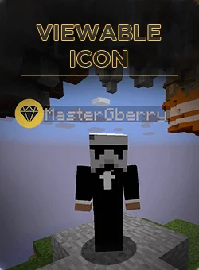
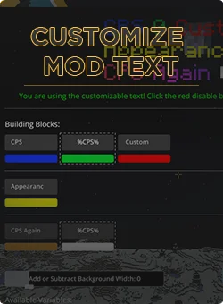
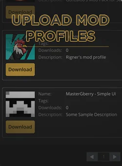
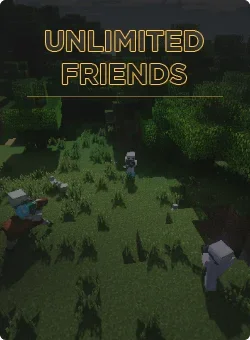
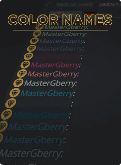
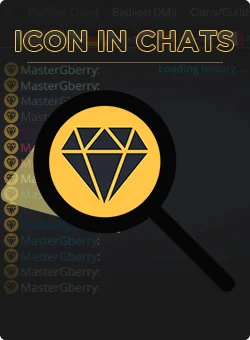

Badlion bietet ein kostenpflichtiges Upgrade für den Clinet, unzwar Insieder Rank. Mit dem Badlion Insider Rank bekommt man einen Exklusiven Zugriff auf Badlion Betas (Badlion 3.0), custom Messages überm Nametag, HD Skins, Icons neben dem Namen, custom Modtexte, man kann Modprofiles hochladen, unendliche Freundes liste, farbige Namen und Icons im Chat.
Seit neueren Versionen kann man mit Badlion auch einen Youtuber Rank bekommen. Dieser hat die gleichen Features wie der Insider Rank. Außerdem kann man als Youtuber ein Cloak zu Badlion einreichen, welches man dann im Badlion Store kaufen kann.
Seit neueren Versionen kann man mit Badlion auch einen Youtuber Rank bekommen. Dieser hat die gleichen Features wie der Insider Rank. Außerdem kann man als Youtuber ein Cloak zu Badlion einreichen, welches man dann im Badlion Store kaufen kann.

Der Insider-Rang gibt dir die Möglichkeit, frühen Zugriff auf neue Features des Badlion Client zu erhalten. Du kannst die Betaversion spielen, indem du die "Beta verwenden?"-Option neben der "Optifine verwenden?"-Option aktivierst.

Als Insider kannst du eine eigene Nachricht über deinem Namen mit allen Formatierungscodes (Farben, Fett, Kursiv, ...) hinzufügen. Du kannst diese Funktion aktivieren, indem du das Menü (Rechte Umschalttaste) öffnest, zum Insider-Tab navigierst, die "Nametag-Nachricht anzeigen"-Option aktivierst und in das Feld "Nametag-Nachricht" deine Nachricht eingibst.

Mit diesen hochauflösenden Skins kannst du dein Aussehen im Badlion Client besser zum Ausdruck bringen! Jeder Nutzer des Badlion Clients wird deinen HD-Skin sehen, während Nutzer des normalen Minecraft Clients deinen normalen Skin sehen werden. Weitere Informationen über HD-Skins können hier gefunden werden.

Das Insider-Symbol kann von jedem Nutzer des Badlion Clients gesehen werden. Du kannst es aktivieren, indem du das Menü (Rechte Umschalttaste) öffnest, zum Insider-Tab navigierst und die "Nametag-Symbol anzeigen"-Option aktivierst.

Du kannst bei den meisten unserer Mods den Text anpassen (nicht alle Mods unterstützen das Feature, wie z.B. Minimap), um statt unseren vordefinierten Texten deine eigenen anzeigen zu lassen.

Als Insider kannst du Mod-Profile direkt im Client hochladen und mit anderen Nutzern teilen.

Du kannsst im Badlion Client so viele Freunde wie du willst hinzufügen. Normale Nutzer haben ein Limit von 20 Freunden.

Du kannst deinen Ingame-Namen in allen Badlion Client Textkanälen farbig hervorheben lassen. Du kannst ddie Farbe deines Namens ändern, indem du das Menü (Rechte Umschalttaste) öffnest, zum Insider-Tab navigierst und den Farbwähler verwendest.

Du kannst dein Insider-Symbol neben deinem Namen im Badlion Client Chat und den DMs anzeigen lassen. Du kannst es aktivieren, indem du das Menü (Rechte Umschalttaste) öffnest, zum Insider-Tab navigierst und die "Nametag-Symbol anzeigen"-Option aktivierst.